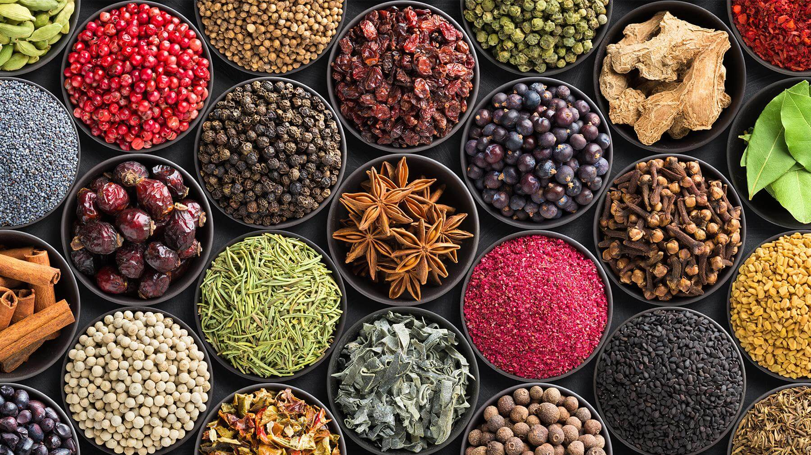

Harmonizing Nature and Daily Living
At Hizqeel Botanics, our remedies start deep in undisturbed soil. We combine time-honored herbal craftsmanship with slow extraction methods to produce clean, bio-available tinctures and restorative oils.
Each small batch is prepared by hand in our apothecary laboratory, completely free from chemical carriers, artificial aromatics, and synthetic emulsifiers.
Apothecary Highlights
Formulated for balance, recovery, and holistic skin health.
Forest Recovery Serum
Infused with wild cedar needle, rosemary oil, and squalane to replenish damaged skin barriers.
Golden Calm Elixir
Full-spectrum chamomile and adaptogenic ashwagandha designed to soothe nighttime restlessness.
Botanical Balancing Mist
Pure steam-distilled rosewater blended with aloe leaf extract for midday hydration.
Our Botanical Commitments
- Regenerative Cultivation: We exclusively collaborate with independent family farms that rotate crops and nourish surrounding micro-ecosystems.
- Protective Amber Glass: All formulas are bottled in dark amber glassware to preserve volatile phytochemicals against daylight oxidation.
- Zero Synthetic Additives: Never formulated with parabens, synthetic perfumes, or petrochemical derivatives.
Voices from the Community
"The Golden Calm Elixir has fundamentally altered my evening unwind ritual. You can immediately feel the clean purity and care put into these botanicals."
— Nabil Athira, Herbal Practitioner